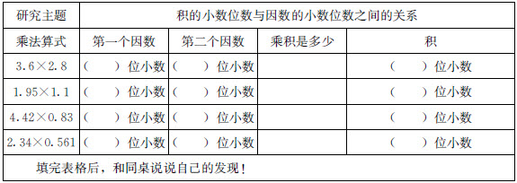
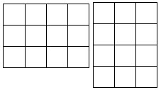
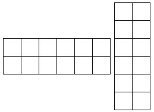
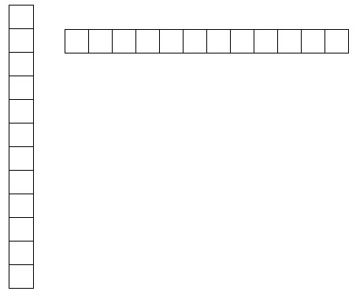
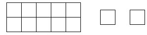

陈惠芳
在当前的小学数学课堂教学中，自然生态的教学环境，低碳的教学设备，自主学习、合作探究的学习方式以及师生有效的交流互动等理念与策略，已被广大一线教师广泛认同和采用。在数学课堂教学中，大多数教师都有意识地安排探究学习活动。但探究活动的安排、素材的选择以及探究活动后的反馈交流是否有效，同样值得深入研讨。我认为，有效探究是小学数学生态课堂的应然选择。
特级教师黄爱华曾说：“如果说学生在课堂上有积极探究的愿望，是因为教师为学生创设了现实而有趣的问题情境；如果说学生能积极主动参与交流讨论，是因为教师为学生提供了足够的探索时间和空间；如果说学生讨论的气氛比较热烈，是因为教师在努力做引导者的角色，认真倾听，不断引导学生的思维走向深入……”小学生的思维是在有效的探究活动中发生、发展的。学生如果亲自参与实践探索活动，就能不断积累活动经验，提升观察、比较、实验、猜测、验证及概括推理的能力，从而理解和掌握基本的数学知识技能和数学思想方法，发展思维。
有一位教师在教学苏教版小学数学第七册“小数乘法”时，精心组织了两次有效的探究活动。
第一次：出示例题，小明家的房间平面图（详见该教材第87页）。要求学生根据已知的数学信息，观察提出什么问题就可以列出乘法算式。学生很快发现了可依次求出房间、小床、阳台的面积。
教师随机板书了3.6×2.8、1.95×1.1、1.15×2.8三个算式，先让学生进行估算，接着启发思考：“你认为这些算式最值得认真研究的问题是什么？”在学生交流的基础上出示活动要求：利用工具（计算器）探究，可以两人合作，研究内容为积的小数位数的规律。最后，教师出示了以下探究内容。

此环节从计算“房间的面积”这个生活原型引入，切入了学生的现实生活背景，唤起了学生强烈的求知欲。在课堂上，采用合作探究的学习方式，扩大了思维和探索空间，有利于学生问题意识的培养。经过比较，学生都发现了“第一个因数的小数位数加上第二个因数的小数位数就是积的小数位数”这样一个规律。
但仅仅知道“小数乘小数，积有几位小数”是不够的。本节课的目标之一是理解并掌握小数乘小数的计算方法，能正确计算。因此，在学习小数乘法的竖式计算时，教师第二次大胆放手，并提出了探究活动的更高要求：禁止使用计算器，要独立计算，会使用书本自学。
学生带着问题自学书本后，进行了交流反馈，教师随机板书竖式1.1×1.95，让学生说出竖式计算的书写要点。教师在书写时，故意将1.1与1.95的小数点对齐，让学生随机进行小数加减法与乘除法的方法比较，并利用书本内容（特别是虚线方框中的思考过程），随机抽查学生的自学能力，在处理积的小数位数这一教学难点时，教师又设疑问难，不断追问如何利用11×195的积“2145”得到1.1×1.95的积，小数点应该点在哪里，理由是什么。随着师生间不断的追问、思考、补充、完善，学生探索得到了小数乘小数的计算法则。
我以为，数学课堂是师生智慧和人格生成最为活跃的场所，而自主、合作、探究的学习方式能够使数学课堂散发出永久的魅力。从这个角度去分析，开放的计算教学过程改变了传统的封闭式教学中“把信息从一个地方传递到另一个地方”的单向过程，使教学交流更加多元、立体，更能促进学生充分、全面地发展。两次开放的探究活动，目标指向明确，都是在实际的问题情境中，让学生运用原有的知识经验自主估算、口算、笔算，在培养学生的估算能力、计算能力的同时，帮助学生灵活掌握小数乘小数的算理算法。
数学课堂上的探究活动，一般教师都会提供学习素材，主要包括教师在课堂上必备的演示教具和学生探究活动必需的学具等学习材料。素材的丰富性，正是开展有效探究活动的依据。
一位教师在教学“角的认识”时，在尝试制作角、感知角的特征环节中，每组提供了以下实验素材：小棒、黄色硬条、圆形纸片、毛线。要求学生“当一回小小设计师”，制作一个数学上的角。
小组活动时，学生兴趣盎然，有的同学用小棒搭成了一个角，有的同学用硬条交叉一放，也形成了一个角，有的同学用圆形纸片折成了一个角，还有的学生甚至用毛线做出了一个角。接着，教师请一个学生上台演示了用毛线做成角的过程。因为毛线是柔软的，用毛线拉成一个角，很多学生并不容易理解。因此，教师利用这一素材，不断丰富探究的内涵。
首先，教师模仿有些学生用毛线拉了一个“角”，让学生判断是不是角。学生都说不是，为什么呢？学生都说角是尖尖的，可教师拉的毛线的头是圆圆的，所以不是角。教师又将一条边拉直，另一边仍旧弯曲，让学生判断，学生仍说不是。一条边不拉直为什么不能成为角？学生认为，角的两边应该是直直的。最后，教师邀请一位学生上台合作，教师拉住毛线的头，学生把两条边拉直，继续让学生判断，学生认为还不是角……原来，学生与刚才用小棒搭的角进行了比较，认为所谓角，不光要两边直，而且头上还要尖。于是，教师放手让同桌合作，一起来用毛线做一个角。最后，闭上眼睛，想一下，角是什么样子的。
不难看出，这一教学过程就是一个师生合作交流的过程。这个环节较好地处理了师生之间的交流、生生之间的交流，巧妙地利用了小组学习、活动游戏等方式，促进了学生间的合作与交流。在进行探究活动时，教师针对学生难以理解的内容，欲擒故纵，大胆放手。一方面让学生在做角的过程中，感悟角的特征，掌握角的特点，使探究性学习真正为突破难点服务；另一方面提供了比较丰富的实验材料，尤其是对毛线的巧妙利用，很好地利用这一素材挖掘了角的内涵，点亮了教学细节，帮助学生正确理解了“角的顶点（尖尖的）”、“角的两条边（直直的）”。在学习的过程中，培养了学生合作的习惯、交流的能力，更好地促进了学生思维的发展。
目前，小学数学课堂上的资源分布呈现出一种关涉多极、空间无限的立体状态。数学课堂上的资源整合，应包括三方面内容：一是教师为了完成教学任务而选择的一些资源，二是来自学生的资源，三是在课堂上生成的资源。但这些资源并不是都可以直接为教师所用，需要教师课前根据教学需要分析、判断并作出选择。在数学生态课堂中，资源整合的合理性是有效探究的着力点。
有一位教师在教学“同类量的合并和比较”时，在拓展练习环节，要求学生利用教室环境进行信息收集，可选择师生人数、课桌张数等信息，要求记录为2类：直接条件信息，如男生有（ ）人；间接条件信息，如女生有（ ）组，每组（ ）人。在此基础上，学生尝试着提出问题，如全班有多少人、课桌有多少张等。学生通过具体的情境图，发现要解决的是师生外出旅游问题。因此，课桌的张数这个信息显然无关紧要。于是，编出了以下应用题：
老师带我们去春游，男生共去（ ）组，每组（ ）人。女生共去（ ）组，每组（ ）人。一共去了多少学生？师生一共多少人？
为了便于快速统计出一些数值，教师在学生座位的安排上分别让男生和女生单独成组，以便得出男、女生各有几组，每组有几人。而听课老师的座位安排是不固定的，所以很多学生直接用数数的方法得到。在整理相关信息的基础上，学生选择策略（口述是同类量的合并还是比较）——并列式计算，解决问题。
数学课程标准要求学生“具有收集、整理信息的能力，能合理加工信息并提出简单的数学问题，能根据信息之间的内在关系寻找解决问题的有效方法”。从中可以看到，教师非常重视对数学知识的精选、对学习资源的有效利用。教师在寻求策略的过程中，始终让学生明白：在真实的情境中，相关的信息很少是有条理地呈现在面前的，所提供的信息恰好对应所要解决的问题的情况很少，学会对信息进行整理就显得至关重要。而值得提及的是，学生在生态时空中的感悟是一种高度个性化的心智活动，是学生主体对外部知识、信息的深层内化，是学生对资源信息的重新选择、组合和建构。通过学生自己收集信息、整理信息、提出问题、寻求策略直至解决问题，体现了让数学回归生活本真、学以致用的理念。如果没有教师课前对教学内容的深入挖掘，就不可能巧妙地让来自课堂上师生真实的信息资源为教学所用，从而达到发展学生数学思维、提高学生数学能力的目的。
从生态学的视角看，课堂构成了一个微观的生态系统。任何一个和谐的生态系统，每一生态因子都会按自身固有的规律自由地生长、发展。联系我们的数学课堂，就是指教师、学生、环境三者之间形成的一种动态平衡关系。生态课堂上的探究活动，正是基于生态因子的运动特点，从不平衡到平衡再到不平衡。如此循环往复，三者相互依存，相互制约，呈多元互动的协进关系。
不妨再以“同类量的比较和合并”一课为例。教师在最后一个环节安排了以下练习：
此次春游共去学生（ ）人，老师（ ）人。现在有两套票价，你觉得应该采用何种票价比较合算？
“中华恐龙园票价”A“中华恐龙园票价”B
（1）学生：30元/人团体票价（大人小孩均32元/人）
（2）大人：60元/人
在该探究活动中，教师要求以小组为单位，运用刚才计算得到的师生人数来解决生活中的旅游问题，到底采用何种门票比较合算，显然是要看哪种票价花费的钱少。学生兴趣盎然，通过计算、比较、思考得出结论，采用B套票价比较便宜。问题似乎得到了解决，学生露出了喜悦的表情。此时，教师又抛出了这样的问题：如果教师人数发生变化，什么时候，采用A套票与B套票比较接近？一石激起千层浪，学生又睁大了眼睛，思维得到了深化。原来的问题通过学习，找到了应对的策略，问题解决了；课末，又产生了新的问题……于是，从不平衡到平衡又到不平衡，生态因子正在不断地碰撞、激活……
应该指出的是，依据生态位原理，每个学生在数学课堂生态系统中，都应该有一个相应的位置，这与学生自身的能力、气质、性格、自我效能感等主观因素有关。对此，教师的作用就是在安排探究活动时，要想方设法地使每个学生这个生态因子在原有的基础上发挥出最大的学习潜力，多角度、多层次地调动他们的学习内动力，形成学习的内驱力，使生疑、质疑、释疑形成一条可持续的生态链，促进学生思维品质的提升。
进入信息社会，不难发现，教师教学手段在日益更新，如采用多媒体辅助教学提高课堂教学效果。在课堂上，播放一些课件可以增强数学教学内容的直观性，给学生提供大量的信息资源，拓展学生的思维空间，增加课堂练习的容量。但是，现实的数学课堂教学中也有些弊端不容忽视。例如，多媒体使用不当，容易喧宾夺主，教师被课件牵着鼻子走，学生的学习主动性不能很好地体现出来，反而影响了学生的创造潜能。何况，生态的数学课堂强调低碳性，崇尚简单的学习环境，它不排斥一些必要的辅助教学手段，但讲究载体介入的适度性。
一位教师在教学“认识三角形”一课时，在判断任意的三条边是否可以围成三角形时，教师出示了课件：下面每组三根小棒，能围成三角形吗？为什么？
四组依次是6厘米、7厘米、10厘米，6厘米、3厘米、10厘米，3厘米、7厘米、10厘米，14厘米、8厘米、3厘米。学生初次判断后，对于第三组有了争执，有的认为可以，有的认为不可以。教师先让学生利用小棒操作，在小组里交流一下，学生的意见还是不太一致。接着，教师用课件演示了3厘米、7厘米、10厘米一组为什么围不成三角形的过程，学生终于信服了。而最后一组，学生一下子判断出不能围成三角形。那么，“如果最长的一条边可以变化，怎样就可以围成三角形呢”，教师不断追问着。接着，教师出示了三根小棒的实物，拿起了剪刀，开始剪，学生睁大了眼睛。教师趁机请一名学生上台来操作，当14厘米依次减少到13厘米、12厘米、11厘米、10厘米、9厘米、8厘米……时，其余的学生似乎有了新的发现。他们在思考，这道题中，当两条边8厘米、3厘米固定后，还有一条边可以有多少种情况。
从这个环节的设计，可以看出载体介入的适时、适度和实效性。由于在前面的教学环节中，学生根据动手操作的经验，已经获得了给任意三条边，并不一定都能围成三角形的初步印象。但是，怎样的三条边才能围成三角形呢？学生对此并没清晰地了解。于是在判断时，教师先出示课件，让学生观察，凭借给出的数字直接判断。而最后一道习题中，给出的三条边是14厘米、8厘米、3厘米，在出示实物可以改动最长边的情况下，教师利用直观演示，让学生观察思考，进而真正把握围成三角形的三条边的长短关系。在这里，我们可以看到现代教学手段与传统教学手段的完美结合，多媒体的适当演示突破了教学难点，师生简单的动手操作激活了学生的思考，在生生和师生间进行互动交流，既验证了课本的结论，又激发了学生的好奇心和探究欲。可见，生态的小学数学课堂，载体的介入是适度的，它是有效研究的参照系。
基于上述一些思考，我以为，在小学数学生态课堂探究活动中，学生是探究活动的主体，是创造者。教师要努力营造生态的氛围，构建促进学生思维发展、个性发展的场域，适时地引导和点拨，促进学生对数学知识的理解、对数学思想方法的内化，形成积极的情感态度和价值观，让课堂真正成为师生享受学习生活的幸福的精神之旅。
课堂智慧
给数学课注入一些“生态的元素”
——苏教版四年级下册“倍数和因数”课堂教学案例
2011年4月14日，我在张家港市兆丰小学举办的张家港市“小学数学生态课堂的实践研究”课题协作研讨暨课题中期成果汇报活动中执教“倍数和因数”一课。
课堂是教育情境中人（教师和学生）与环境（教室及其中的设施）互动而构成的基本系统，常被人看做是一个独立的生态系统。小学数学生态课堂强调自然和谐的教学氛围，关注学生自主学习，重视多媒体设计的实用性、适用性、低碳性，追求各种教学资源的有效整合与合理利用。现以苏教版小学数学义务教育课程标准实验教科书第八册第九单元“倍数和因数”一课为例，谈谈自己的一些实践与思考。
“倍数和因数”这一单元安排在学生已经掌握了许多自然数的知识之后，系统地教学分数的意义和性质之前，是在学生已经学习了乘法和除法的基础上进行的。通过对本课的学习，可以使学生进一步丰富自然数的知识，了解自然数之间存在的倍数与因数这种相互依存的关系，体会自然数都有因数，而且不同自然数的因数个数是不同的。这些内容将为以后进一步学习分数知识作必要的铺垫。
备课时，我通过研读教材，分析学情，确定了以下教学目标：
（1）通过活动建构、小组学习的形式，帮助学生理解倍数和因数的实际意义，掌握找一个数的倍数和因数的方法，发现一个数的倍数、因数中最大的数、最小的数及其个数方面的特征。
（2）让学生初步意识到可以从一个新的角度来研究非零自然数的特征及其相互关系，培养学生观察、分析、抽象概括能力和自主学习能力，使之体会数学内容的奇妙、有趣，产生对数学的好奇心。
（3）通过学习，加强因数与倍数之间的联系与区别，适时渗透数学文化，发展学生的数感，增强学生对数学学习的美好情感。
为了把自己的课题研究真正融入课堂，使课堂力求体现生态，我进行了限制因子分析。生态学的耐度定律告诉我们：生物在一定环境中生存需要多种生态因素，当某种生态因素处在低于临界线或超过最大忍受度的情况下，就会起到限制因子的作用，影响生物的生存和发展。课堂教学同样如此。在本节课中，涉及的生态因子有教师、学生、环境和多媒体等。教师“教”得过度、环境过分花哨、多媒体播放过分频繁、画面过于热闹，就变成了限制因子。要使限制因子变成“有益因子”：在课堂上，教师精讲多练，强调学生小组学习的作用，发挥每个学生的学习主动性。环境布置简洁大方，多媒体设计简约有效，真正为课堂教学服务。教师教学准备充分，学生的学习用具课前发放好。
同时，我还进行了生态环境设想：为了创设良好的生态环境，课堂上需要一定的彩光，但是要使全班同学都能看到前面的投影仪、课件。为此，教室前面四排的窗帘需要拉上，后面的窗户可以打开。课件中有音乐播放，多媒体的音响效果要好，音量要适中。为了控制生态课堂中的颜色，全班学生统一穿校服。阶梯教室的环境布置应简洁大方，黑板上没有除数学课以外的信息干扰。上课时室外温度比较适宜，因此不需要打开空调。另外，在教学过程中安排了小组学习，学生的座位按照6人小组呈U型摆放。教师的讲台与学生的座位之间应该有适当的距离，能够使教师在教室里顺利地巡视指导，听课教师不能挤在学生小组的中间，也不能坐在讲台旁边，以免影响学生的视线。所有教师的通信工具调成震动状态，上课期间不接听电话，不随便议论，以免影响学生的听课情绪。
课前，教师随机播放本班学生在校园里学习、生活、活动的图片，让每个学生介绍学校、班级、自己，说说自己在班级中的的好朋友是谁。教师强调，谁是谁的好朋友，两个人是相互的。在我们的数学知识中，也存在这样一种相互依存的关系。
师：用12个小正方形摆成一个长方形，想想看，有多少种不同的拼法？每排分别摆几个？摆了几排？用乘法算式把自己的摆法表示出来，在小组里交流。
学生动手操作，小组内观察交流：一共有多少种不同的摆法。
集体反馈交流，根据学生的回答，教师出示相应算式：4×3=12，6×2=12，12×1=12。根据算式，要求学生猜摆法，每行摆几个，摆几行。多媒体依次呈现下面图1、2、3（通过学生比较两个图形是旋转得到的之后，课件渐渐隐去每组右边的一个图形）。

图1

图2

图3

图4
师：（追问）每排能摆5个吗？
随着学生的回答，多媒体出示相应的图示及文字（见图4）让学生观察，如果每排摆5个，摆了2排，会多余2个，所以，12个小正方形摆成一个长方形，每排不能摆5个。
根据图示，帮助学生理解倍数和因数的实际意义。以第一道乘法算式为例，4×3=12，让学生根据课前谈话中谁是谁的好朋友，尝试着说一说数学中谁是谁的倍数。那么，3和4是12的什么数呢？先猜一猜，再让学生看书回答。根据学生的回答，完整出示：4×3=12，12是4的倍数，12也是3的倍数，4和3都是12的因数。板书课题：倍数和因数。为了研究的方便，看看书上还强调了什么。（我们所说的数专指不是零的自然数）教师补充板书：非零自然数。
学生尝试根据6×2=12，12×1=12，说说谁是谁的因数、谁是谁的倍数。同桌每人说一个。
师：（追问）刚才我们能不能只讲12是倍数，12也是因数？（举例：听课的时候，老师发现教室里来了一位家长，能简单说哪一位是爸爸，哪一位是儿子吗？）强调倍数和因数是相互的，这是我们这节课学到的又一个新知识点。
学生完成想想做做1：根据算式，说说哪个数是哪个数的倍数，哪个数是哪个数的因数。11×4=44，60÷12=5，9×9=81。
师：（出示例题）你能找出多少个3的倍数？
学生尝试写出3的倍数，写好后在小组里说，并思考找倍数的方法。教师请一名学生板演。
教师讲评作业，交流找一个数倍数的方法。预设：学生有的想乘法（或直接采用乘法口诀），有的想除法。
学生尝试写出2的倍数、5的倍数、10的倍数。教师指名板演，讲评作业。
学生比较2、3、5、10的倍数，说一个数的倍数有什么特点。
教师在学生交流的基础上，完成板书填写：一个数最小的倍数是它本身，没有最大的倍数，一个数倍数的个数是无限的。
教师出示例题：你能找出36的所有因数吗？请每个学生独立尝试练习。
学生完成后在小组里交流，说自己是怎么想的。
教师预设：可能会有以下几种情况：
（1）2，4，6，12，18，36（没有找全）。
（2）1，2，3，4，6，9，12，18，36（完整且有序）。
（3）1，36，2，18，3，12，4，9，6（一对一对找）。
（4）1，2，3，4，6，6，9，12，18，36（出现了两个6）。
学生完成后同桌交流：怎么找，才能有序、不重复、不遗漏？教师收集学生的典型作品，并指名三名学生板演。
教师讲评学生习作，要求学生思考：怎么找才能既不重复又不遗漏？
师：（追问）你觉得找36的因数时，为什么找到36÷6=6就不要找了？（教师趁机出示刚才操作活动中4×3=12的长方形图示，两个因数几近相等，就接近一个正方形）
学生完成试一试：尝试找10的因数、16的因数、1的因数。
学生比较10、16、1的因数，总结一个数的因数有哪些特点，并在小组里交流。
师：（在学生交流的基础上，总结并完成板书）一个数最小的因数是1，最大的因数是它本身，一个数因数的个数是有限的。
师：（追问）为什么一个数最大的因数是它本身、最小的是1？（结合学生的回答，出示操作活动中1×12=12的图示。观察1是自然数的单位，共有12个正方形，最大的因数就是12，就是它本身）
学生根据板书中10的倍数与10的因数，说有什么新的发现。
教师请学号是10的同学回答：10的最小倍数是（10），10的最大因数是（10）。请学生仿照他的样子用自己的学号说说这两句话。
师：（追问）根据刚才的学习，我们是否可以说一个数的倍数一定大于这个数的因数？为什么？
多媒体出示判断题，学生练习独立思考，口答：
（1）因为2×4=8，所以2和4是因数，8是倍数。（ ）
（2）25的因数有1，5，25。（ ）
（3）30以内6的倍数有6，12，18，24，30…（ ）
（4）一个数的倍数一定大于这个数的因数。（ ）
教师组织全班反馈，重点让学生说一说判断题中错的理由，并及时纠正。
1．介绍一个数——完美数
师：让学生用最快的速度说一说6的因数。（多媒体演示，把6画去，1+2+3=6，又回到了6本身）正因为这样的数很特别，所以数学家们将具有这一特点的数称为完美数。6就是第一个完美数。随着背景音乐，依次呈现以下完美数：6，28，496，8128，33550336，8589869056…
师：边播放多媒体，边讲解：到1999年，人类共发现了38个完美数，其中第三个完美数到第四个数的发现之间用了1000多年。完美数不仅因为少见，更因为它“美”，比如，迄今为止发现的完美数，全是双数；除6之外，每个完美数中的数字反复相加的最后结果都是1，比如28，2+8=10，1+0=1，再比如496，4+9+6=19，1+9=10，1+0=1；每个完美数都可以表示为一组连续自然数的和，比如6=1+2+3，28=1+2+3+4+5+6+7，496=1+2+…+31，8128=1+2+…+127等。完美数的发现就是从因数起步的，数学就是这样神奇，每个知识都能打开一个无限神秘的世界。
2.推荐一本书
师：史学家通过考证发现，时间单位的进率之所以定为60，是因为在100以内的自然数中，60的因数最多。时、分、秒之间的进率定为60竟和因数的个数有着密不可分的联系，数学的奇妙有时真是让人难以置信！因数和倍数领域中类似的数学现象比比皆是。老师向大家推荐一本《数字王国》。请大家观看视频。
师：通过这节课的学习，你有什么新的收获？闭上眼睛想一想，再与大家交流一下。
教师出示快乐大转盘的比赛规则：如果转到的是中间数的因数，算你赢；如果转到的是中间数的倍数，算老师赢；如果转到的既不是中间数的倍数又不是中间数的因数，平局。
学生开始游戏。
课毕。